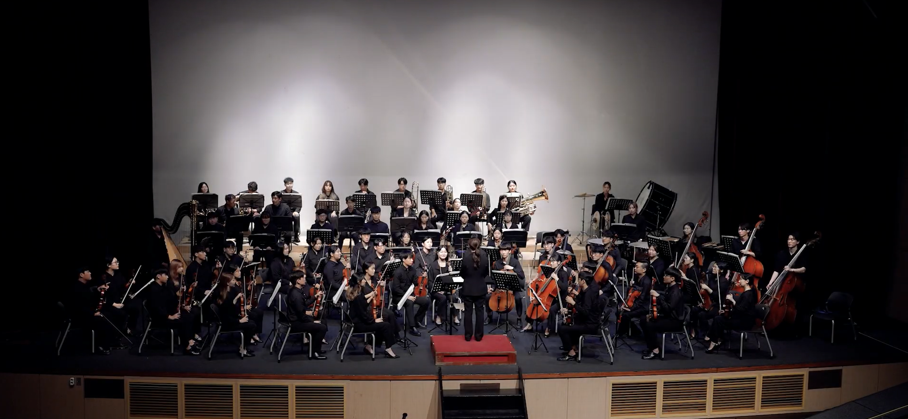
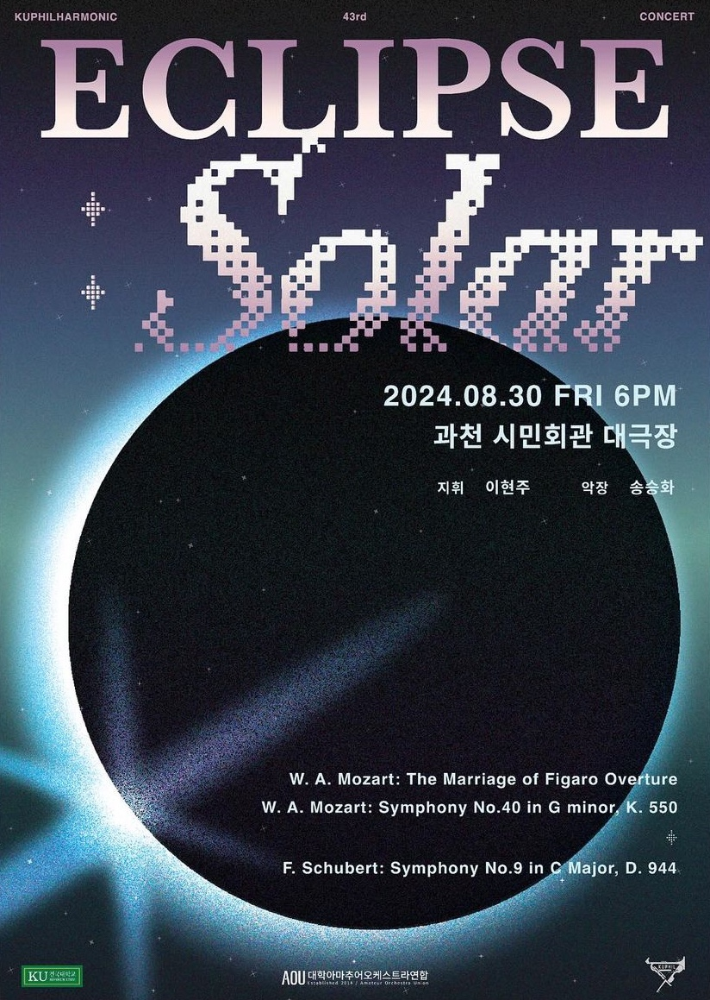
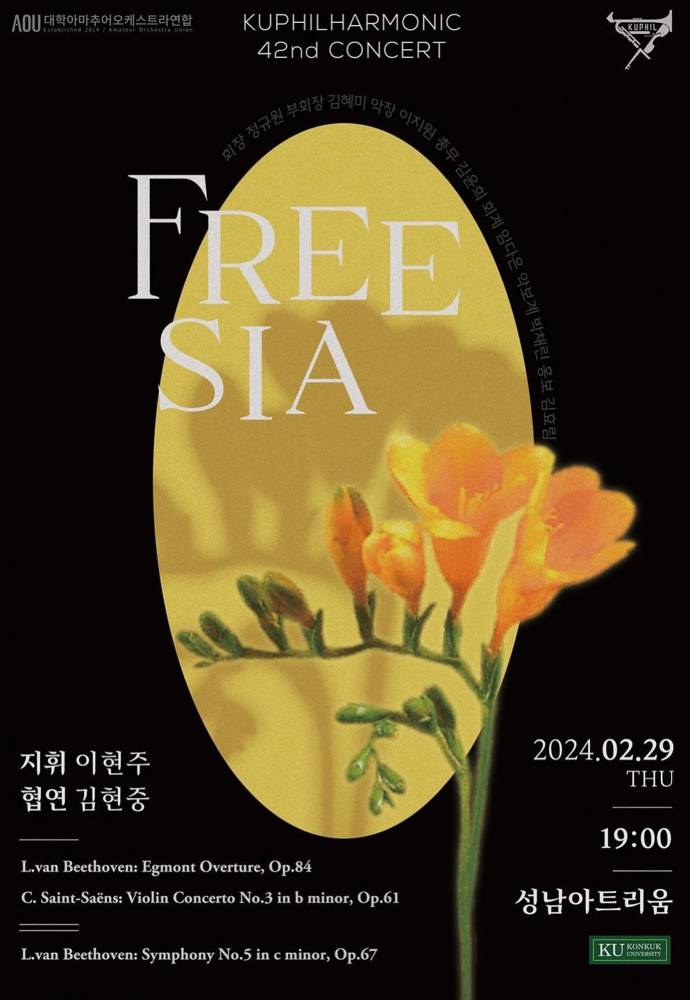
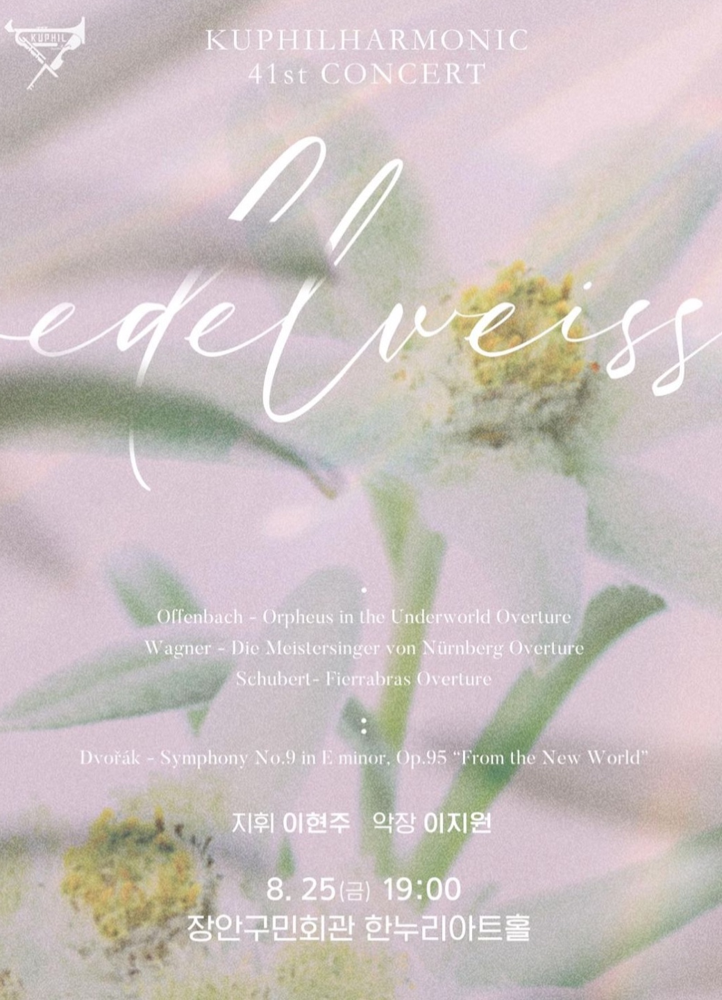
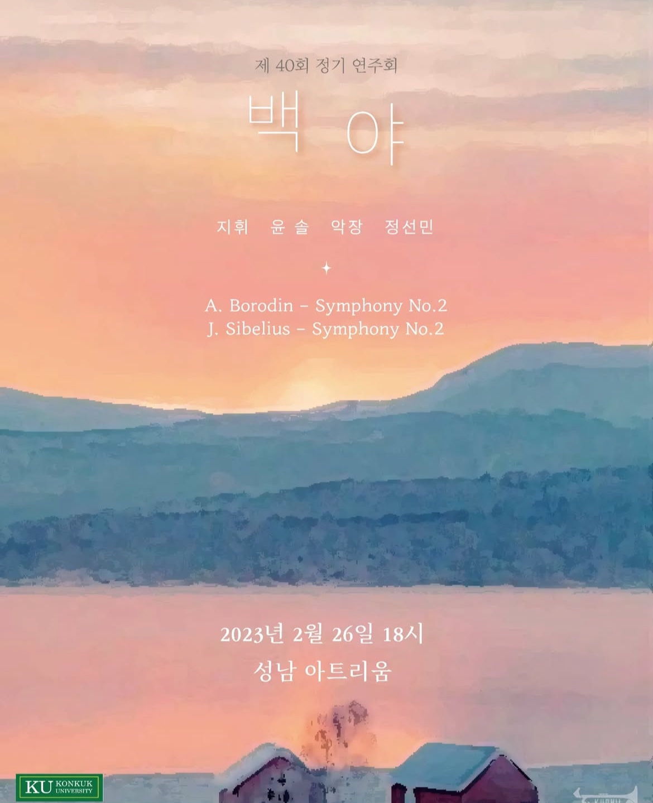
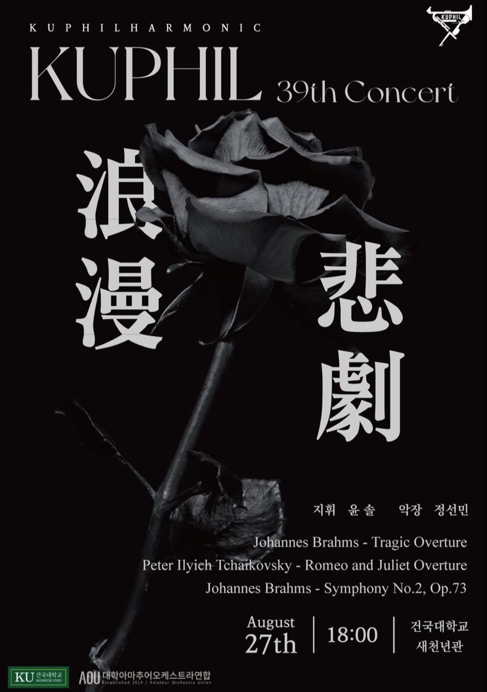

“아름다운 선율을 통해 공동체의 가치를 실현하는 오케스트라 동아리"
건국대학교 아마추어 오케스트라 KUPhil은 2003년에 '세레나데(Serenade)'라는 이름으로 창단되어,
현재까지 활발한 연주 활동을 이어오고 있는 중앙동아리입니다.
전공에 상관없이 음악을 사랑하는 학생들이 모여
매년 정기 연주회와 다양한 공연을 통해 클래식 음악의 아름다움을 전하고 있습니다.
악기 연주 경험이 없는 초보자부터 숙련자까지 모두 참여할 수 있으며,
음악을 통해 단원 간의 유대감을 형성하고 있습니다.
KUPhil은 음악을 사랑하는 건국대학교 학생이라면 누구나 함께할 수 있는 열린 동아리로,
아름다운 선율을 통해 공동체의 가치를 실현하고자 합니다.
“아름다운 선율을 통해 공동체의 가치를 실현하는 오케스트라 동아리"
건국대학교 아마추어 오케스트라 KUPhil은 2003년에 '세레나데(Serenade)'라는 이름으로 창단되어,
현재까지 활발한 연주 활동을 이어오고 있는 중앙동아리입니다.
전공에 상관없이 음악을 사랑하는 학생들이 모여
매년 정기 연주회와 다양한 공연을 통해 클래식 음악의 아름다움을 전하고 있습니다.
악기 연주 경험이 없는 초보자부터 숙련자까지 모두 참여할 수 있으며,
음악을 통해 단원 간의 유대감을 형성하고 있습니다.
KUPhil은 음악을 사랑하는 건국대학교 학생이라면 누구나 함께할 수 있는 열린 동아리로,
아름다운 선율을 통해 공동체의 가치를 실현하고자 합니다.





2002 동국대학교 OPUS 창단
2019 제 25회 정기연주회
2019.09.08 지휘 | 박예리 악장 | 정지은 협연 | 이연주
2020 신입생 환영 연주회, 제 26회 정기연주회
2020.04.18 지휘 | 이동우 협연 | 정지윤, 김정수
2020.09.12 지휘 | 이동우 협연 | 손자앵
2021 제 20회 정기연주회
2021.08.29 지휘 | 한상욱 악장 | 한가현 협연 | 정희정
2022 제 21회 정기연주회
2022.11.12 지휘 | 한상준 악장 | 한가현
2023 제 22회 정기연주회
2023.11.17 지휘 | 장예은 악장 | 조예나
2024 제 23회 정기연주회
2024.11.16 지휘 | 이현주 악장 | 성동하